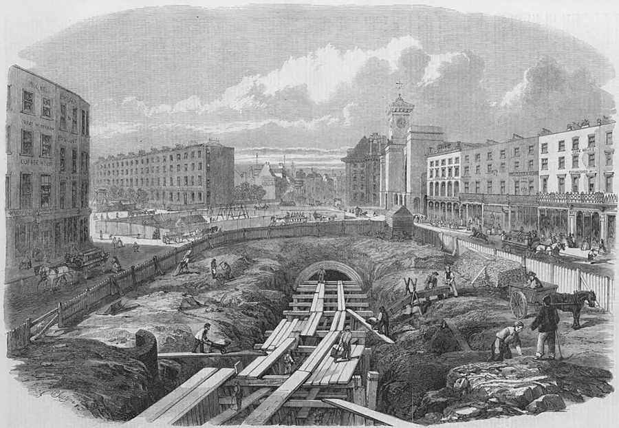
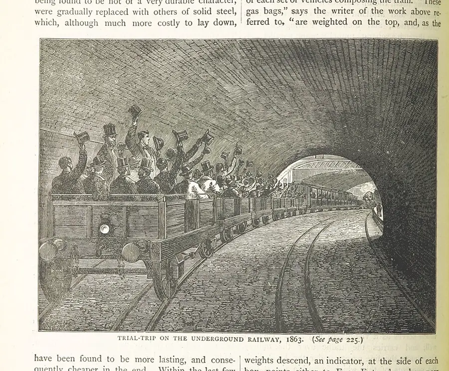
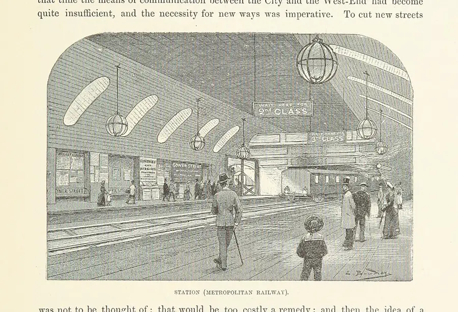
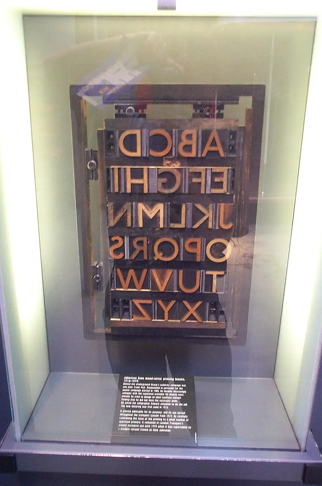

대표 로고대표 브랜드 마크
대표 로고대표 브랜드 마크런던 지하철 London Underground
런던 지하철(London Underground)은 영국 그레이터 런던과 에식스주, 하트퍼드셔주, 버킹엄셔주 등 주변 지역에서 운영되는 지하철망으로, 세계에서 가장 오래된 도시철도이다. 역은 270개이며 선로 길이는 약 400km에 이른다.
최종 업데이트
런던 지하철은 어떤 브랜드인가
런던 지하철은 그레이터 런던과 그 주변 지역에서 운영되는 도시철도망이다. 이름과 달리 철도망의 55%는 지상 구간이며, 흔히 '지하철(the Underground)' 또는 굴착 터널의 모양에서 딴 '튜브(the Tube)'라는 별칭으로 불린다.
역은 270개, 선로 길이는 약 400km로 세계에서 노선 연장이 가장 길고, 역당 수송 승객 수도 가장 많다. 2007년에는 연간 탑승객 수가 10억 명을 넘어섰다.
여러 회사가 개별적으로 건설한 노선들은 1933년 런던 여객 운송 본부로 통합되었고, 이후 런던 지하철 회사(LUL)가 설립되어 운영을 맡았다.
런던 지하철은 어떻게 시작되고 성장했나
런던 지하철의 시초는 메트로폴리탄 철도로, 1854년 국회 제정법 통과 후 그레이트 웨스턴 철도의 보조로 건설이 추진되었으며, 런던 시 사무 변호사 찰스 피어슨의 로비로 1859년 런던 시 법인 회사의 투자를 이끌어냈다. 메트로폴리탄 철도는 1863년 1월 10일 개통되어 세계 최초의 도시 지하 여객철도가 되었으며, 개통 몇 달 만에 하루 26,000명의 승객을 수송했다.
이후 메트로폴리탄 디스트릭트 철도가 1868년 개통되었고, 두 회사의 경쟁 속에서도 내부 순환선이 1884년 완공되었다. 1890년에는 시티와 남런던 철도가 세계 최초로 고심도·전철화 노선으로 개통되었다.
이렇게 여러 회사가 개별적으로 건설한 노선들은 1933년 런던 여객 운송 본부(LPTB)로 통합되었다.
런던 지하철의 브랜드 아이덴티티는 무엇인가
런던 지하철은 세계에서 가장 오래된 도시철도이자 노선 연장이 가장 긴 지하철망으로, '튜브'라는 별칭으로도 불린다.
런던 지하철의 대표 제품과 서비스는 무엇인가
런던 지하철은 메트로폴리탄 철도에서 출발해 현재의 해머스미스 앤 시티 노선, 서클 선, 노던 선 등 여러 노선으로 구성된 지하철 네트워크를 운영한다. 초창기 노선은 개착식 공법으로 건설되어 지상 건물 붕괴를 일으키기도 했으며, 이후 노선은 실드 공법과 전기 견인, 고심도 터널 설계를 활용해 지상 영향을 줄이며 지어졌다.
이스트 런던 철도는 이셈바드 킹덤 브루넬이 설계한 템즈 터널을 개조하여 철도 터널로 사용했다. 전체 네트워크는 역 270개, 선로 길이 약 400km 규모다.
런던 지하철은 지금 어떤 상태인가
런던 지하철 회사(LUL)는 2003년까지 런던 교통공사(TfL)의 독점적인 보조 회사였다. TfL은 런던 시장이 임명한 위원회와 위원이 운영하는 법인 회사로, 런던 수도권 대부분의 대중교통망에 대한 책임을 진다.
2007년 기준 연간 탑승객 수는 10억 명을 넘어섰다.
런던 지하철 로고는 어떻게 변해왔나
대표 로고대표 브랜드 마크사진으로 보는 런던 지하철의 역사




자주 묻는 질문
런던 지하철는 어느 나라 브랜드인가요?
런던 지하철는 영국의 모빌리티 브랜드입니다.
런던 지하철는 언제 설립되었나요?
런던 지하철는 1890년 설립되었습니다.
런던 지하철의 브랜드 아이덴티티는 무엇인가요?
런던 지하철은 세계에서 가장 오래된 도시철도이자 노선 연장이 가장 긴 지하철망으로, '튜브'라는 별칭으로도 불린다.
런던 지하철의 대표 제품은 무엇인가요?
런던 지하철은 메트로폴리탄 철도에서 출발해 현재의 해머스미스 앤 시티 노선, 서클 선, 노던 선 등 여러 노선으로 구성된 지하철 네트워크를 운영한다.
런던 지하철는 현재 어떤 상태인가요?
런던 지하철 회사(LUL)는 2003년까지 런던 교통공사(TfL)의 독점적인 보조 회사였다.
런던 지하철의 본사는 어디에 있나요?
런던 지하철의 본사는 런던에 있습니다(위키데이터 기준).
런던 지하철의 모기업은 어디인가요?
런던 지하철의 모기업은 런던지하전기철도입니다(위키데이터 기준).
출처와 검증
런던 지하철 관련 참고: 공식 웹사이트 · 위키데이터 Q20075 · 한국어 위키백과 · 영어 위키백과. 브랜드명은 한글과 원어를 함께 표기하되 데이터에 없는 표기는 만들지 않습니다. 기원 국가·설립연도는 검수된 정의문에서 확인된 값을 우선하고, 없을 때만 공식 웹사이트 URL이 일치하는 위키데이터 개체의 값을 씁니다. 위키데이터 값은 2026-09-26 기준입니다.